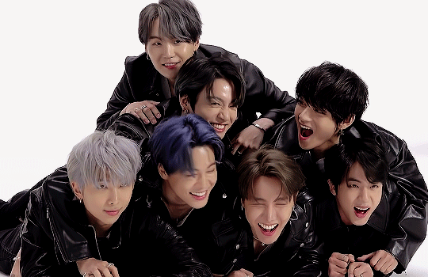
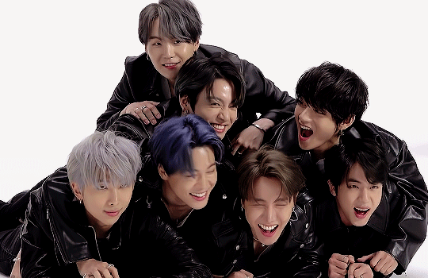
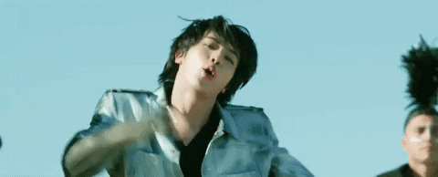
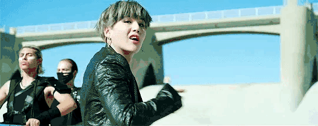
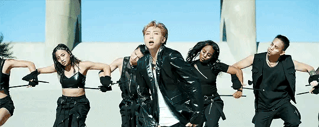
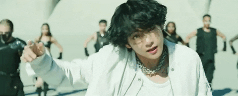
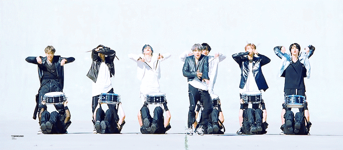

BTS
BTS (방탄소년단 / Bangtan Sonyeondan) es un grupo sur-coreano creado en 2013 por Big Hit Entertainment formado por siete miembros, de nacionalidad coreana quienes desempeñan diversos roles en el grupo, destacando canto, baile, composición, producción y creación de letras de canciones, modelaje entre otros. El grupo esta a cargo del CEO Bang Shihyuk a.k.a "The Hitman Bang", quien administra las actividades del grupo y ayuda a la toma de decisiones tanto internas como de producción y composición siguiendo el formato actual de idols entrenados.


Historia
BTS esta conformado por RM (líder, rapero principal, bailarín, productor) Suga (rapero, bailarín, productor, compositor); J-Hope (rapero, bailarín principal, vocalista ocasional, coreógrafo); Jimin (vocalista, bailarín, visual); V (vocalista, bailarín, visual); Jungkook (vocalista principal, bailarín, rapero ocasional); y Jin (Vocalista, bailarín y compositor). El grupo debutó el 13 de junio de 2013 con la canción “No More Dream”.
El nombre de su club de fans es A.R.M.Y, acrónimo de “Adorable Representative MC for Youth”.
En sus inicios BTS tuvo un éxito moderado, primero con la publicación de su álbum debut simple “2 Cool 4 Skool”. A partir de 2015 empezó a ganar popularidad y a establecer su reputación como un grupo socialmente consciente con sus lanzamientos de la serie “The Most Beautiful Moment in Life Part 1, Part 2”, y el álbum recopilatorio ”The Most Beautiful Moment in Life: Young Forever”, con los que también entró por primera vez en la lista Billboard 200. Extendió esta imagen tanto con su segundo álbum de estudio Wings, que se convirtió en el primer disco de la banda en vender más de un millón de copias en Corea del Sur.
Para 2017, BTS empezó a ser reconocido a nivel internacional como el principal promotor de la ola coreana, especialmente en el mercado estadounidense; fue la primera banda coreana en recibir las certificaciones de oro y de platino por parte de la RIAA, por los sencillos «DNA» y «MIC Drop» respectivamente. Su album Love Yourself: Her debutó en el séptimo puesto en la Billboard 200, la mejor posición alcanzada por un artista coreano hasta ese momento.
En febrero de 2019, el grupo asistió a la 61.ª edición de los Premios Grammy para presentar el premio al «Mejor álbum de R&B».Esta fue la primera vez que la banda formó parte de este evento después de su aparición en el Museo de los Grammy en Los Ángeles en 2018. En abril, BTS se convirtió en el primer artista asiático en sobrepasar 5 mil millones de streams en Spotify, además de ser nombrados como una de las personalidades más importantes de 2019 por la revista Time.
El 12 de abril, Big Hit Entertainment publicó el sexto EP del grupo, Map of the Soul: Persona, junto con el vídeo musical del sencillo principal del disco, «Boy With Luv», que contó con la participación de la cantante estadounidense Halsey. El sencillo, «Boy With Luv», debutó en el número 8 de la Billboard Hot 100, la mayor posición alcanzada por un grupo coreano,217 en tanto que su vídeo musical superó el récord del vídeo más visto de YouTube en 24 horas tras su publicación al acumular 74.6 millones de visitas. Con el álbum, la banda se convirtió en el primer artista coreano en alcanzar el número 1 en las listas de Reino Unido y Australia, además de llegar a ser el primer grupo tradicional en tener 3 álbumes número 1 en la lista Billboard 200 en menos de un año, desde The Beatles en 1995.
En abril, BTS se convirtió en el primer artista asiático en sobrepasar 5 mil millones de streams en Spotify,208 además de ser nombrados como una de las personalidades más importantes de 2019 por la revista Time, en la lista Time 100.209 El 12 de abril, Big Hit Entertainment publicó el sexto EP del grupo, Map of the Soul: Persona, junto con el vídeo musical del sencillo principal del disco, «Boy With Luv», que contó con la participación de la cantante estadounidense Halsey.
BTS lanzó su primer sencillo en inglés "Dynamite" el 21 de agosto del 2020. Su video musical rompió el récord de YouTube para el estreno más visto, con más de tres millones de espectadores, y estableció un nuevo récord para el video más visto en las primeras 24 horas de lanzamiento. También se convirtió en el primer video musical de la plataforma en superar los 100 millones de visitas en menos de un día.
BTS también se convirtió en el primer acto de Corea del Sur en alcanzar el número uno en Billboard Global 200 y US Billboard Hot 100 con su sencillo "Dynamite" y el remix de "Savage Love (Laxed - Siren Beat)" y, con el lanzamiento de "Life Goes On", se convirtió en el primer grupo en tener dos debuts número uno en el Hot 100.
BTS acaba de hacer historia al convertirse en el primer grupo de K-Pop en ser nominado a los Premios Grammy, la banda de pop coreano está nominada para competir en los GRAMMYs 2021 gracias a su gran éxito en la industria musical.
El nombre de su club de fans es A.R.M.Y, acrónimo de “Adorable Representative MC for Youth”.
En sus inicios BTS tuvo un éxito moderado, primero con la publicación de su álbum debut simple “2 Cool 4 Skool”. A partir de 2015 empezó a ganar popularidad y a establecer su reputación como un grupo socialmente consciente con sus lanzamientos de la serie “The Most Beautiful Moment in Life Part 1, Part 2”, y el álbum recopilatorio ”The Most Beautiful Moment in Life: Young Forever”, con los que también entró por primera vez en la lista Billboard 200. Extendió esta imagen tanto con su segundo álbum de estudio Wings, que se convirtió en el primer disco de la banda en vender más de un millón de copias en Corea del Sur.
Para 2017, BTS empezó a ser reconocido a nivel internacional como el principal promotor de la ola coreana, especialmente en el mercado estadounidense; fue la primera banda coreana en recibir las certificaciones de oro y de platino por parte de la RIAA, por los sencillos «DNA» y «MIC Drop» respectivamente. Su album Love Yourself: Her debutó en el séptimo puesto en la Billboard 200, la mejor posición alcanzada por un artista coreano hasta ese momento.
En febrero de 2019, el grupo asistió a la 61.ª edición de los Premios Grammy para presentar el premio al «Mejor álbum de R&B».Esta fue la primera vez que la banda formó parte de este evento después de su aparición en el Museo de los Grammy en Los Ángeles en 2018. En abril, BTS se convirtió en el primer artista asiático en sobrepasar 5 mil millones de streams en Spotify, además de ser nombrados como una de las personalidades más importantes de 2019 por la revista Time.
El 12 de abril, Big Hit Entertainment publicó el sexto EP del grupo, Map of the Soul: Persona, junto con el vídeo musical del sencillo principal del disco, «Boy With Luv», que contó con la participación de la cantante estadounidense Halsey. El sencillo, «Boy With Luv», debutó en el número 8 de la Billboard Hot 100, la mayor posición alcanzada por un grupo coreano,217 en tanto que su vídeo musical superó el récord del vídeo más visto de YouTube en 24 horas tras su publicación al acumular 74.6 millones de visitas. Con el álbum, la banda se convirtió en el primer artista coreano en alcanzar el número 1 en las listas de Reino Unido y Australia, además de llegar a ser el primer grupo tradicional en tener 3 álbumes número 1 en la lista Billboard 200 en menos de un año, desde The Beatles en 1995.
En abril, BTS se convirtió en el primer artista asiático en sobrepasar 5 mil millones de streams en Spotify,208 además de ser nombrados como una de las personalidades más importantes de 2019 por la revista Time, en la lista Time 100.209 El 12 de abril, Big Hit Entertainment publicó el sexto EP del grupo, Map of the Soul: Persona, junto con el vídeo musical del sencillo principal del disco, «Boy With Luv», que contó con la participación de la cantante estadounidense Halsey.
BTS lanzó su primer sencillo en inglés "Dynamite" el 21 de agosto del 2020. Su video musical rompió el récord de YouTube para el estreno más visto, con más de tres millones de espectadores, y estableció un nuevo récord para el video más visto en las primeras 24 horas de lanzamiento. También se convirtió en el primer video musical de la plataforma en superar los 100 millones de visitas en menos de un día.
BTS también se convirtió en el primer acto de Corea del Sur en alcanzar el número uno en Billboard Global 200 y US Billboard Hot 100 con su sencillo "Dynamite" y el remix de "Savage Love (Laxed - Siren Beat)" y, con el lanzamiento de "Life Goes On", se convirtió en el primer grupo en tener dos debuts número uno en el Hot 100.
BTS acaba de hacer historia al convertirse en el primer grupo de K-Pop en ser nominado a los Premios Grammy, la banda de pop coreano está nominada para competir en los GRAMMYs 2021 gracias a su gran éxito en la industria musical.
Discografia
Corea
Single Album
2 COOL 4 SKOOL
Dynamite (Daytime & NightTime version)
Mini-Album
O!RUL8,2?
SKOOL LUV AFFAIR
The Most Beautiful Moment In Life Pt.1
The Most Beautiful Moment In Life Pt.2
LOVE YOURSELF: Her
MAP OF THE SOUL: PERSONA
Full Album
DARK & WILD
WINGS
LOVE YOURSELF: Tear
MAP OF THE SOUL: 7
Repackage
SKOOL LUV AFFAIR SPECIAL ADDITION
LOVE YOURSELF: Answer
Special Album
The Most Beautiful Moment In Life: Young Forever
YOU NEVER WALK ALONE
Mixtapes
RM
Agust D (Suga)
Hope World (J-Hope)
D-2 (Suga)
Soundtracks
BTS World: Original Soundtrack
Even If I Die, It's You
Sweet Night
Singles Digitales
Danger (Mo-Blue mix) feat. THAN
Come Back Home
MIC Drop (Steve Aoki Remix) feat. Desiigner
FAKE LOVE (rocking vibe mix)
Dream Glow
A Brand New Day
All Night
Chicken Noodle Soup
Make It Right (feat. Lauv)
Make It Right (feat. Lauv) (EDM mix)
Make It Right (feat. Lauv) (Acoustic mix)
Black Swan
Dynamite
Otros Lanzamientos
With Seoul
In the SOOP
Japón
Singles
No More Dream
BOY IN LUV
DANGER
FOR YOU
I NEED U
RUN
Blood, Sweat, Tears
MIC Drop/DNA/Crystal Snow
FAKE LOVE/Airplane Pt.2
Lights/Boy With Luv
Full Album
WAKE UP
YOUTH
FACE YOURSELF
MAP OF THE SOUL: 7 ~THE JOURNEY~
Compilation Album
THE BEST OF BOUDAN SHONENDAN
Taiwan
Full Album
DARK & WILD Taiwan Edition
DARK & WILD Taiwan Special Limited Edition

Integrantes
Jin

Suga

J-Hope

RM

Jimin

V

Jungkook

Gracias!!!
Hecho por Alejandra Ocampo y Kenya Navarro
